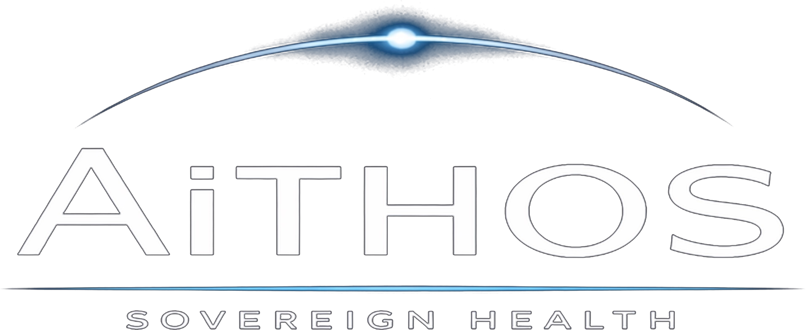

A new way to organize healthcare: your health story belongs to you, and a trusted system helps you understand it and take action.
When you face a complex diagnosis, your information is scattered and the decisions are overwhelming — and no one is clearly on your side. Sovereign Health changes that, with a trusted guide and a clear picture to navigate what comes next.
Everything is organized to serve you. Your interests come first.
Sovereign Health helps you and your doctors see clearly. It never replaces medical judgment or makes decisions for you.
Complex disease moves on its own clock. Understanding where you are — and what's changing — helps you act in time.
AiTHOS is a fiduciary structure — and every part exists to serve that one relationship.
Represents the patient as principal in every complex decision.
Enables the health fiduciary to represent one patient across complex disease states.
Connects patients, care teams, and industry sponsors around the principal.
Returns value created back to the community that generated it.
Your records, results, and history brought together into a single, understandable picture — instead of scattered across systems.
A trusted guide whose job is to represent your interests, so you're never navigating the hardest decisions alone.
Walk into every appointment prepared, with the right questions and a clear view of where you are in your care.
Safeguards, and a fiduciary commitment keep the system honest — and keep you at the center.
The shift is simple, and the foundation is being proven today — one person, one clear story, at a time.
Sovereign Health and AiTHOS provide informational support to help patients organize and understand their health information. They do not provide medical advice, diagnosis, or treatment, and do not replace physicians or care teams. Certain components, including the Sovereign Health Network and Sovereign Health Fund, are at varying stages of development; nothing here is an offer or solicitation of any security or investment. [Counsel to confirm final language.]